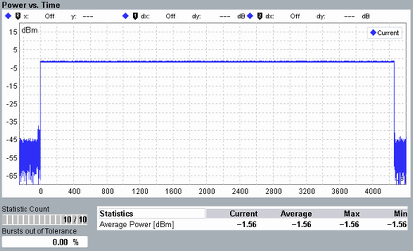

Detailed Views: Power vs Time
The view shows the power within the captured burst. Traces and statistical results are available.

Multi-evaluation: power vs time
The trace covers the complete packet, as well as the power up/down ramp portions.
"Current", "Average", "Minimum", and "Maximum" traces are available for selection.
For the statistical results, refer to "Statistical Power vs Time Results".